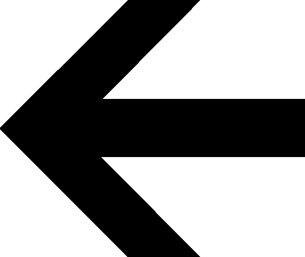

Advertisement
1970
A call for entries to the Lettergraphics
alphabet design contest.
Advertisement
1970
An advertisement for Progressive Color Corporation.
Advertisement
1971
A paper advertisement.
Typography
1971
An advertisement for the typeface
Avant Garde Gothic.
Advertisement
1973
An advertisement for Ludlow fluorescent papers.
Advertisement
1973
A call for entries to a Day-Glo
Color Corp contest.
Advertisement
1973
An advertisement for Great
White Whale Advertising.
Advertisement
1974
An advertisement for the new Kodak
Pocket Instamatic camera.
Design
1975
Graphic design in knitting.
Advertisement
1976
An advertisement for Sel Animation
of Edstan Studio.
Environmental Design
1977
Designs for lamppost banners
in Washington, D.C.
Advertisement
1978
An advertisement for Letraset typefaces.

 Advertisement
Advertisement